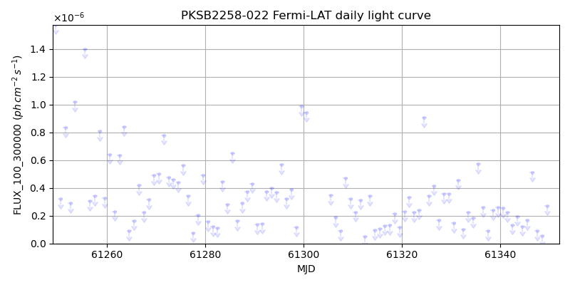
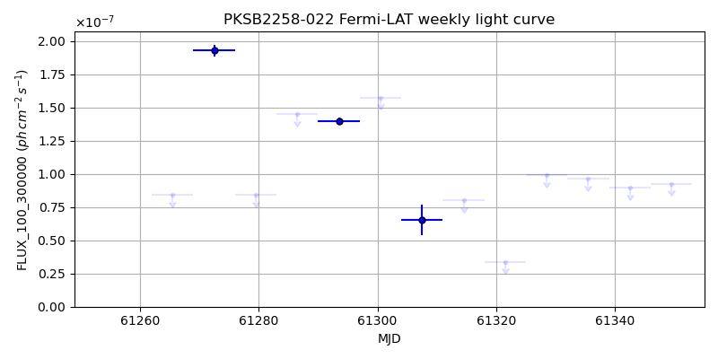
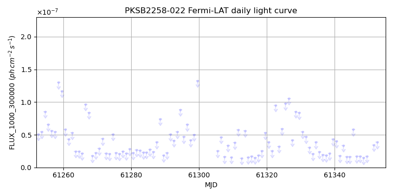
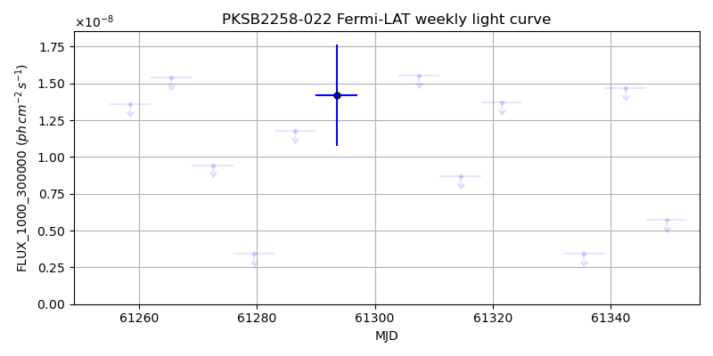

LAT Lightcurve site: https://fermi.gsfc.nasa.gov/ssc/data/access/lat/msl_lc/source/PKS_B2258-022
NED: Query
Time of last update of this page: UT: 2026-11-13 16:31 (MJD: 61357.688)
| Property | Value |
|---|---|
| R.A. | 23:01:07.92 |
| Dec. | -1:58:04.8 |
| z | 0.777 |
| 3FGL SpectrumType | |
| 3FGL PL Index | -1.00 |
| 3FGL Flux_100_300000 | -1.00e+00 |
| 3FGL Flux_1000_300000 | -1.00e+00 |
| 3FGL Flux >200 GeV | -1.00e+00 |
| 3FGL Extrap. Crab >200 GeV | -1.00 |
| 3FGL Flux After EBL Absorption >200GeV | -1.00e+00 |
| 3FGL EBL Crab Fraction >200GeV | -1.00 |

| MJD | dMJD | Flux | dFlux | Frac3FGL | FracCrab>200GeV | EBLFracCrab>200GeV |
|---|---|---|---|---|---|---|
| 61348.50 | 0.50 | 5.33e-08 | 0.00e+00 | 0.00 | 0.00 | -0.00 |
| 61349.50 | 0.50 | 2.71e-07 | 0.00e+00 | 0.00 | 0.00 | -0.00 |
| 61350.50 | 0.50 | 4.66e-08 | 0.00e+00 | 0.00 | 0.00 | -0.00 |
| 61351.50 | 0.50 | 1.61e-07 | 0.00e+00 | 0.00 | 0.00 | -0.00 |
| 61352.50 | 0.50 | 3.86e-07 | 0.00e+00 | 0.00 | 0.00 | -0.00 |

| MJD | dMJD | Flux | dFlux | Frac3FGL | FracCrab>200GeV | EBLFracCrab>200GeV |
|---|---|---|---|---|---|---|
| 61321.50 | 3.50 | 3.38e-08 | 0.00e+00 | 0.00 | 0.00 | -0.00 |
| 61328.50 | 3.50 | 9.92e-08 | 0.00e+00 | 0.00 | 0.00 | -0.00 |
| 61335.50 | 3.50 | 9.65e-08 | 0.00e+00 | 0.00 | 0.00 | -0.00 |
| 61342.50 | 3.50 | 8.94e-08 | 0.00e+00 | 0.00 | 0.00 | -0.00 |
| 61349.50 | 3.50 | 9.26e-08 | 0.00e+00 | 0.00 | 0.00 | -0.00 |

| MJD | dMJD | Flux | dFlux | Frac3FGL | FracCrab>200GeV | EBLFracCrab>200GeV |
|---|---|---|---|---|---|---|
| 61348.50 | 0.50 | 1.45e-08 | 0.00e+00 | 0.00 | 0.00 | -0.00 |
| 61349.50 | 0.50 | 1.72e-08 | 0.00e+00 | 0.00 | 0.00 | -0.00 |
| 61350.50 | 0.50 | -1.00e+00 | 0.00e+00 | 0.00 | 0.00 | -0.00 |
| 61351.50 | 0.50 | 3.44e-08 | 0.00e+00 | 0.00 | 0.00 | -0.00 |
| 61352.50 | 0.50 | 3.89e-08 | 0.00e+00 | 0.00 | 0.00 | -0.00 |

| MJD | dMJD | Flux | dFlux | Frac3FGL | FracCrab>200GeV | EBLFracCrab>200GeV |
|---|---|---|---|---|---|---|
| 61321.50 | 3.50 | 1.37e-08 | 0.00e+00 | 0.00 | 0.00 | -0.00 |
| 61328.50 | 3.50 | 2.66e-08 | 0.00e+00 | 0.00 | 0.00 | -0.00 |
| 61335.50 | 3.50 | 3.42e-09 | 0.00e+00 | 0.00 | 0.00 | -0.00 |
| 61342.50 | 3.50 | 1.47e-08 | 0.00e+00 | 0.00 | 0.00 | -0.00 |
| 61349.50 | 3.50 | 5.72e-09 | 0.00e+00 | 0.00 | 0.00 | -0.00 |
--------------------------------------------------------- Using user-supplied coords: 23:01:07.92 -1:58:04.8 2000 --------------------------------------------------------- FLWO UT night of: 2026-11-14 Local Sid. @ Midnight: 03:09 Sunset (-15.0) (local, UT): 18:35 01:35 Sunrise (-15.0) (local, UT): 05:42 12:42 Moonrise (local, UT): Moonset (local, UT): 20:50 03:50 Moon phase: 0.22 --------------------------------------------------------- AzTime LSID UT Obj_el Obj_az Mn_el Mn_az Sep. --------------------------------------------------------- 18:35 21:44 01:35 51.7 147.2 20.1 218.2 62.7 19:05 22:14 02:05 54.6 158.8 16.0 223.7 62.5 19:35 22:44 02:35 56.2 171.7 11.6 228.6 62.4 20:05 23:14 03:05 56.4 185.3 6.9 233.2 62.2 20:35 23:44 03:35 55.1 198.5 2.0 237.3 61.9 21:05 00:14 04:05 52.4 210.4 -2.2 241.2 61.7 21:35 00:44 04:35 48.7 220.7 -9.0 244.8 61.5 22:05 01:14 05:05 44.2 229.4 -14.6 248.2 61.2 22:35 01:44 05:35 39.0 236.8 -20.4 251.4 61.0 23:05 02:14 06:05 33.5 243.1 -26.2 254.5 60.7 23:35 02:44 06:35 27.7 248.6 -32.1 257.5 60.4 00:05 03:14 07:05 21.6 253.5 -38.1 260.6 60.1 00:35 03:45 07:35 15.5 258.0 -44.2 263.8 59.8 01:05 04:15 08:05 9.2 262.1 -50.2 267.1 59.5 01:35 04:45 08:35 3.0 266.2 -56.3 270.9 59.2 02:05 05:15 09:05 -2.3 270.1 -62.4 275.3 58.8 02:35 05:45 09:35 -10.1 274.1 -68.4 281.1 58.5 03:05 06:15 10:05 -16.4 278.2 -74.2 289.9 58.2 03:35 06:45 10:35 -22.7 282.6 -79.6 306.2 57.8 04:05 07:15 11:05 -28.9 287.3 -83.2 343.5 57.5 04:35 07:45 11:35 -34.9 292.7 -82.1 35.1 57.1 05:05 08:15 12:05 -40.7 298.8 -77.4 61.2 56.8 05:35 08:45 12:35 -46.1 306.0 -71.8 73.4 56.5 05:42 08:52 12:42 -47.2 307.7 -70.5 75.2 56.4 --------------------------------------------------------- Dark hours >55 deg.: 0.00